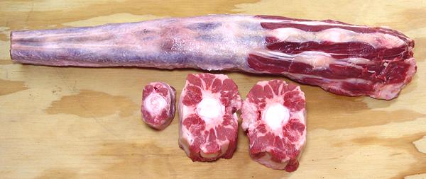

Oxtail

[#1791; Colita der Res (Spanish)]
While this cut was originally the tail of a steer or ox (a bull with his
balls cut off to greatly improve his disposition), today it can also be
from a cow. Oxtail was once considered food for the poor, but today is
quite expensive, valued for its unique characteristics.
The main use for oxtail is in soups, where it's gelatinous nature
provides body. This characteristic is particularly essential in mock
turtle soup, but is used in many other soups and stews worldwide. It is
no doubt even eaten in India, though India likes to pretend beef is not
eaten there.
Whole oxtails vary from 2 to 4 pounds each, so when a recipe calls
for "one oxtail", 3 pounds is a good bet. The photo specimen was 19
inches long and weighed 3 pounds, purchased from a large Asian market
in Los Angeles (Alhambra) for 2017 US $3.99 / pound. The largest piece
in the photo weighed 9 ounces, the smallest 2-3/4 ounces, but pieces
weighing less than an ounce are sometimes included in a tray of
pieces.
More on Cuts of Beef.
Buying:
It pays to keep an eye on your local meat
markets, because the cost of oxtail can vary as much as a few dollars
per pound. On the same day (in July 2017) I saw trays of cut tail from
$3.99 / pound (on sale) to $7.99 / pound.
Prep:
Because oxtail, at least here in California, is
almost always sold already skinned and jointed, there is no prep. Even
rinsing off saw kerf is not needed as they are generally cut with a blade.
Cooking:
Cooking time is usually 3-1/4 to 3-3/4 hours.
After cooking, the meat is most often removed from the bones and the
bones discarded. Some recipes call for serving "on the bone", but in
either case the flesh should easily and cleanly scrape off the bones.
Aromatic vegetables and seasonings are often included during the long
cooking, and in most cases, are discarded with the bones. The soup is
then finished using fresh vegetables and the meat added back near the
end of cooking. In some cases, the overcooked vegetables become part
of the sauce.
Subst:
The best substitutes are Beef Shanks and the
much less costly beef neck bones, but they are imperfect substitutes.
More tender cuts of beef definitely will not serve.
ab_tailz 110219 r 170715 - www.clovegarden.com
©Andrew Grygus - agryg@clovegarden.com - Photos
on this page not otherwise credited © cg1
- Linking to and non-commercial use of this page permitted